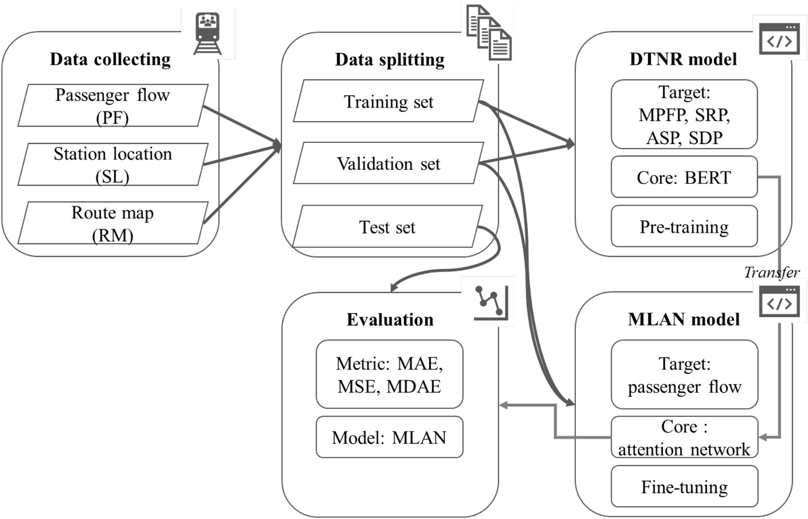

要解決的問題
捷運流量預測需將動態交通網路關係納入模型表示。
輸入、處理與產出
- 輸入
- 捷運網路結構、流量與時間變化。
- 處理方式
- 共同研究以遮蔽流量、車站關係與距離任務學習表示，再分層整合時間、車站及路線訊號。
- 產出
- 交通流量預測方法與Knowledge-Based Systems期刊論文。
適用範圍
我的角色為程式碼與技術支援；以下方法說明屬團隊研究，不代表本人主導架構。
相關案例
成果與驗證
形成 Knowledge-Based Systems 2024 正式期刊論文。
動態交通網路表徵